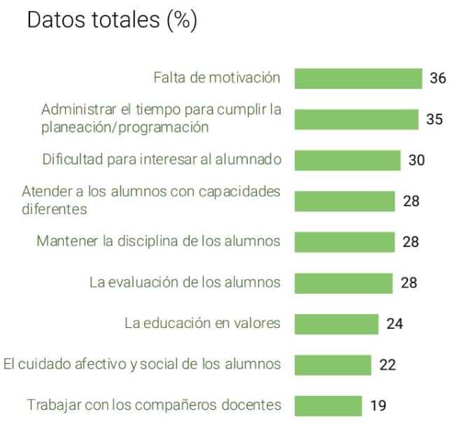

Contexto y justificación
El ejercicio de la labor docente se enfrenta actualmente a un escenario de elevada complejidad. Según los datos del Educobarómetro (2023) del profesorado en España, factores como la falta de motivación del alumnado, la gestión del tiempo para cumplir con las programaciones didácticas, la excesiva y en aumento carga burocrática y, de manera especialmente relevante, la atención a la diversidad en las aulas con ritmos y capacidades heterogéneas, se situan de forma sistémica en las primeras posiciones de las dificultades más representativas del ejercicio docente.

Para dar respuesta a estas problemáticas y en consonancia con los objetivos fijados de reducción del índice de abandono escolar al 9% en el año 2030, el diseño y la personalización del aprendizaje se presenta como una solución pedagógica eficaz para reducir este abandono escolar temprano e incluso un requerimiento imperativo en el actual marco normativo.
Sin embargo, la teoría choca frontalmente con la realidad y el día a día de los centros educativos: la aplicación real, rigurosa e individualizada de estos tipos de metodologías se traduce en una inmanejable carga burocrática y administrativa extra para el docente, quien a menudo se ve absorbido por el papeleo de la justificación competencial en detrimento del tiempo de atención directa a las necesidades del aula.
Aquí es donde nace y radica la necesidad que pretende resolver ALMENDRA. Este software tiene la clara intención de explorar y explotar el potencial que nos pueden ofrecer los sistemas expertos junto con la Inteligencia Artificial como herramienta de soporte. Al tener la información curricular totalmente mapeada, el sistema automatiza y optimiza la productividad aumentando la eficiencia de la labor docente ayudando a la reducción de la carga burocrática y estandarizando el proceso de diseño curricular.
El propósito fundamental de ALMENDRA se condensa en un principio claro, contundente y conciso, devolviendo el foco del docente a lo realmente importante; el proceso de enseñanza-aprendizaje y su alumnado.
No se trata de trabajar más, sino de trabajar mejor
ALMENDRA